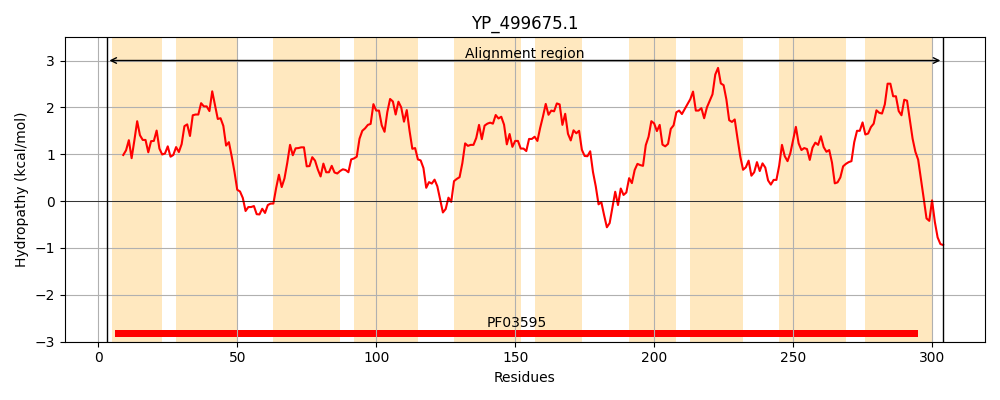
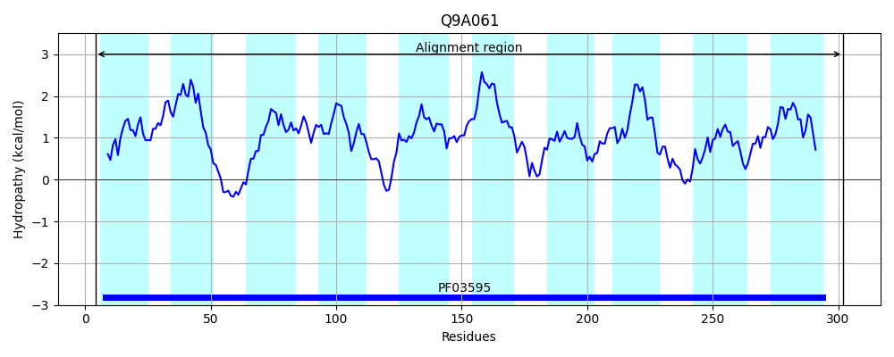
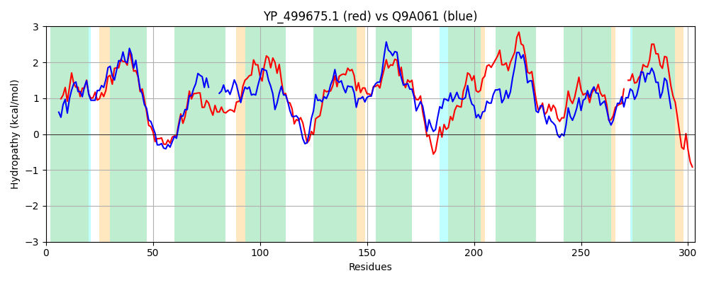

Hit Accession: Q9A061
Hit TCID: 2.A.16.6.1
Hit Description: gnl|BL_ORD_ID|17700 gnl|TC-DB|Q9A061|2.A.16.6.1 Putative exfoliative toxin OS=Streptococcus pyogenes serotype M1 GN=M5005_Spy0720 PE=4 SV=1
Mach Len: 303
e:0.000000
Query TMS Count : 10
Hit TMS Count: 10
TMS-Overlap Score: 8.700000
Predicted Substrates:CHEBI:22563;anion
BLAST Alignment:
Score: 571 , Bit scores: 224 bits, E-value: 4.8e-72, Alignment length: 303, Percentage identity: 41
Query: 3 LQKAPLVTSGLVLGLLGLGNLLKDLSLTLNAVCGIFAFLIWIHLLCTMIKYFNNVKEQLNSPLVSSVFTTFFMSGFLGTTYLNTFFSNITFINSLITPIWILCLVGIMTHMIIFSIKYLKDFSLENVYPSWTVLFIGIAIAGLTAPVSGYFFIGQLTVIYGFVATCIVLPIVFKRLKAFPLQTSIKPNTSTICAPFSLVAAAYVIAFPKANAFIVIIFLLLAQIFYFYIIIQLPKLLKEPFSPVFSAFTFPLVISATALKNSLPVLMFPDI-WKGLLFIEVLLATVIVLRVFIGYLHFFLKKE 304
L+ PLV SGL LG L GNLL N + + A I+ LL M++ N+ K QL PL++SVF TFFM+G L L++ F +T L W L +G + + + +++ FS +NV+PSW+VLF+GIA+A LTAP S F +GQ+ + T ++LP + K+ L ++ PN ST CAP SL++A+Y+ FP+ +VI L+ +Q+ Y ++++QLP+LL PF+P FSAFTFP VISAT+LK +L L + + W+ LL EVLLAT +V V+ YL F + +
Sbjct: 4 LKTPPLVMSGLALGTLSFGNLLATYVSIFNYLGILAALFIYGILLVGMVRNLNDTKMQLRQPLIASVFPTFFMTGML----LSSLFLKVTGGCWLGFLTWWLFFLGNLVLIAYYQYRFVFSFSWDNVFPSWSVLFVGIAMAALTAPASRQFLLGQVIFWVCLLLTAVILPFMAKKTYGIGLGQAVMPNISTFCAPLSLLSASYLATFPRPQVGMVIFLLVSSQLLYAFVVVQLPRLLNRPFNPGFSAFTFPFVISATSLKMTLSFLGWQGLGWQVLLLGEVLLATALVTYVYGAYLRFLFQNK 302 | Protein Hydropathy Plots: |
|---|
|  |  |
Pairwise Alignment-Hydropathy Plot:
|
|---|
|  |